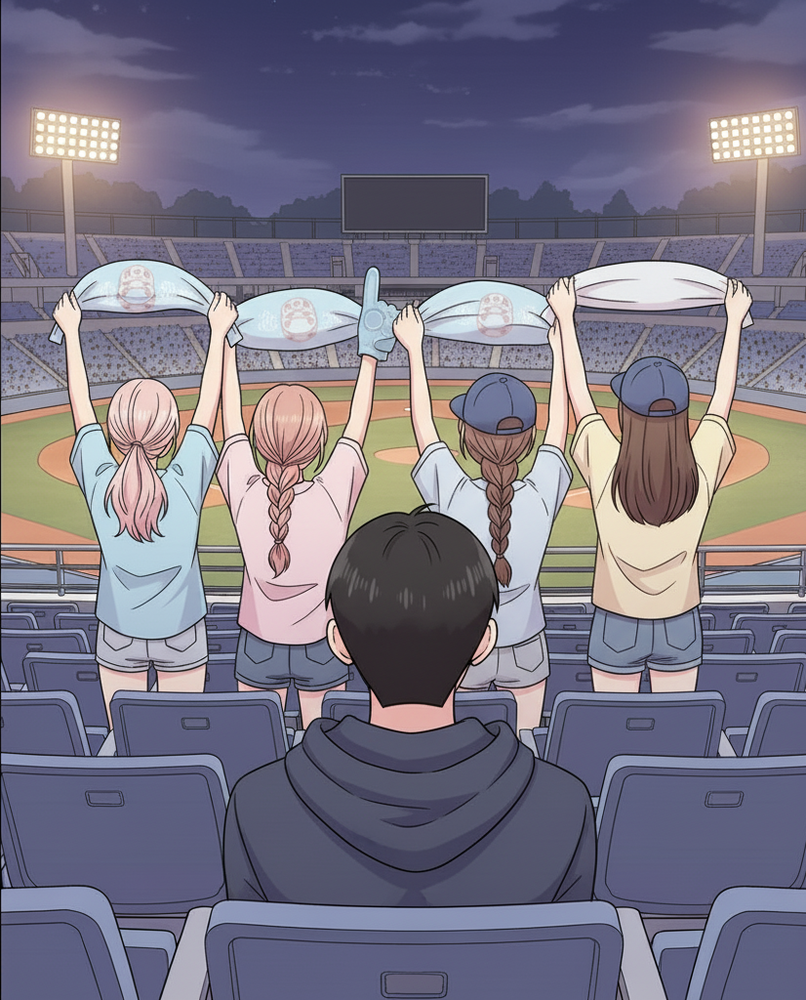
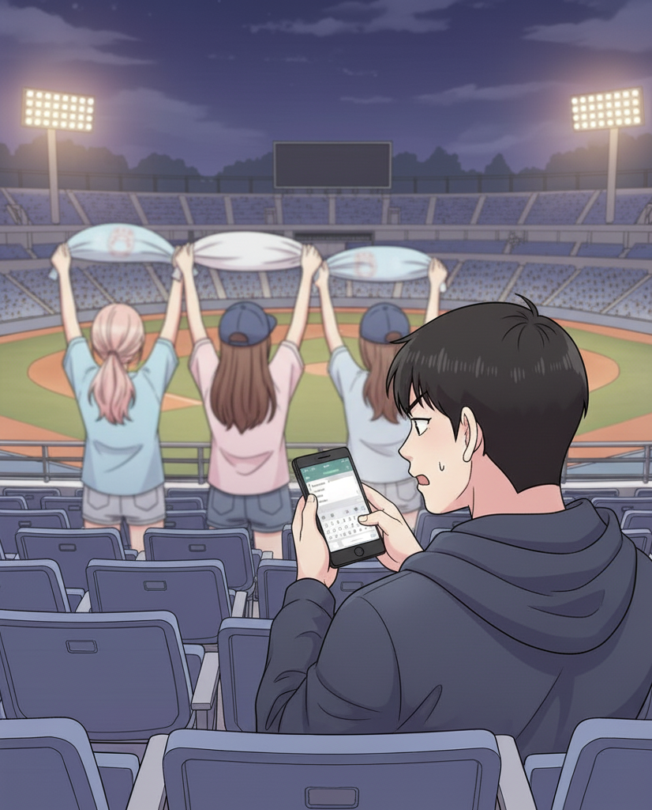
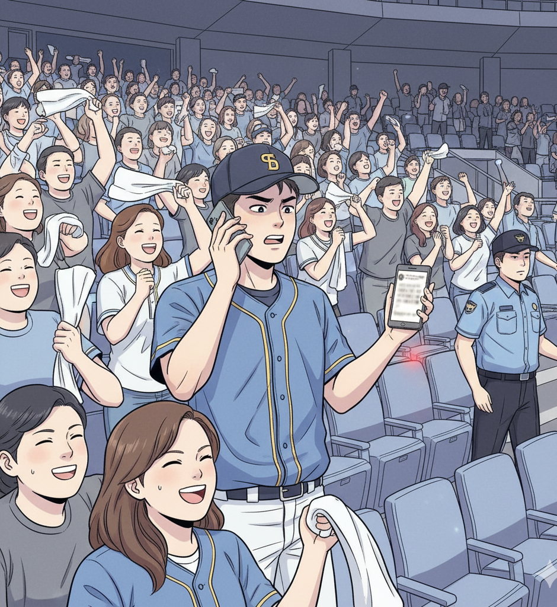
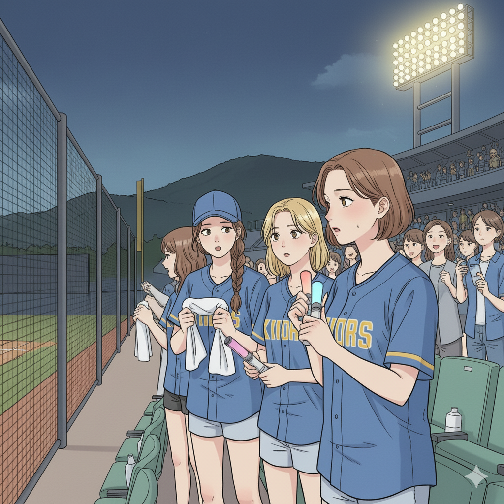

26 歲的日籍男大生連續兩天到台東棒球場看球，卻被前排熱情應援的女球迷擋住視線，完全看不到前方。

怒氣逐漸升溫的他，忍不住拍下前方球迷的照片，在 Threads 上發文寫下：「總有一天要殺掉這些傢伙（こいつらいつか殺す）」。

現場，一位球迷朋友看到這則威脅性貼文後立刻報警。警方與工作人員來到觀眾席，隨後將當事人帶回了解。

看到貼文的女球迷停下手中的應援，強烈的恐懼感湧上心頭，「第一次跳應援跳到要被殺死。」畢竟，發文的人就坐在他的正後方，恐怖的言詞已經影響到他看球的心情。
這次作業中，我使用 Nano Banana 作為主要的圖片生成工具，透過 ChatGPT 協助撰寫精確的 prompt，創造出四張風格統一、劇情連貫的漫畫。